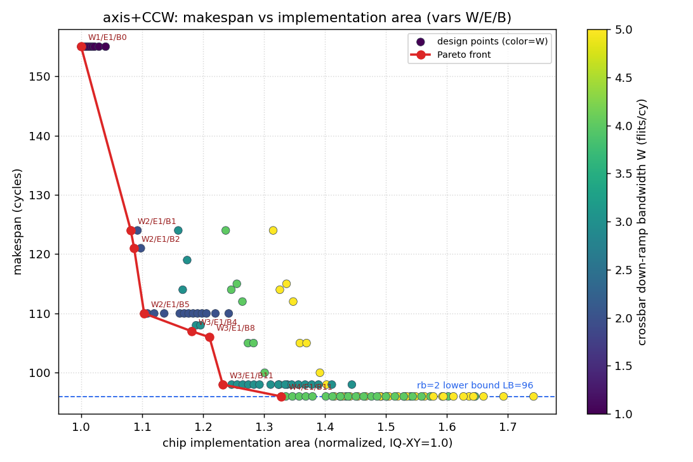

axis+CCW：makespan × 芯片实现面积 Pareto DSE
8×6 mesh · H=7 · V=9 · 仅考察 axis+CCW · 设计变量 W/E/B ·
116 个协调设计点 · 数据 axis_area_makespan.json · 生成 2026-07-16T05:38:23.117740+00:00
核心结论
96makespan 下限（直径受限，无法突破）
W4/E1/B11达界 96 的最省实现
1.328该实现面积（归一 IQ-XY）
W3/E1/B11性价比拐点（98cy@1.232）
- makespan 有硬地板 96：由网络直径（2·ramp+对角 Manhattan）决定，任何 W/E/B 组合都无法低于它——
花面积只能逼近而非突破。
- Pareto 前沿全部落在 E=1（单口漏出到 SRAM）：因为到达时刻被直径天然摊开，慢速漏出配合深突发 buffer
即可跟上，无需多口写 SRAM。E>1（多写口 SRAM）买不到更低 makespan 却更贵，永远被支配。
- W 与 B 是真正的杠杆：沿前沿 W 从 1→4、B 从 0→11 换取 makespan 155→96；
面积从 1.0 升到 1.328（+33%）。
- 耦合已体现：B=0 时 W>E 纯浪费（已剪枝，只留 W=E）；buffer 面积随 (W+E)/2 增大，
即“crossbar 越宽、漏出越快，突发 buffer 每比特越贵”。
- 结论对面积溢价稳健：即使把多口 buffer/SRAM 溢价拉高（“high”列），前沿仍是同样的 E=1 配置。
1. 散点图与 Pareto 前沿

每点一个 (W,E,B) 实现；颜色=W；红线为 Pareto 前沿；蓝虚线为 rb=2 直径下限 96。
右侧高面积散点多为 E>1（多写口 SRAM），均被 E=1 前沿支配。
2. Pareto 前沿明细（nominal 面积模型）
| 实现 (W/E/B) | makespan | 面积(nominal) | 面积(high溢价) |
crossbar 出口 | 突发buffer | 多写SRAM |
|---|
| W=1 / E=1 / B=0 | 155 | 1.0000 | 1.0000 | 0.0000 | 0.0000 | 0.0000 |
| W=2 / E=1 / B=1 | 124 | 1.0815 | 1.0833 | 0.0760 | 0.0055 | 0.0000 |
| W=2 / E=1 / B=2 | 121 | 1.0870 | 1.0906 | 0.0760 | 0.0109 | 0.0000 |
| W=2 / E=1 / B=5 | 110 | 1.1034 | 1.1125 | 0.0760 | 0.0274 | 0.0000 |
| W=3 / E=1 / B=4 | 107 | 1.1812 | 1.1958 | 0.1520 | 0.0292 | 0.0000 |
| W=3 / E=1 / B=8 | 106 | 1.2104 | 1.2396 | 0.1520 | 0.0584 | 0.0000 |
| W=3 / E=1 / B=11 | 98 | 1.2323 | 1.2725 | 0.1520 | 0.0803 | 0.0000 |
| W=4 / E=1 / B=11 | 96 | 1.3284 | 1.3886 | 0.2280 | 0.1004 | 0.0000 |
面积拆分单位为归一 IQ-XY；总面积 = 1.0(基础路由器) + 三项增量。
“high溢价”把 buffer 端口因子取 (W+E−1)、SRAM 每写口取满额。
3. 面积模型（可复算）
总面积 = 1.0 + Δcrossbar + Δbuffer + Δsram (归一 IQ-XY=1.0)
Δcrossbar(W) = 0.076 × (W−1)
（crossbar 向下ramp 多出 W−1 个 eject 输出列；0.076=0.380/5 每输出口）
Δbuffer(W,E,B) = 0.00365 × B × (W+E)/2
（深度 B、宽 512b；写口 W + 读口 E 的多端口因子 (W+E)/2，1W1R=1 基准）
Δsram(E) = 0.5 × 0.00365 × 47 × (E−1)
（gather SRAM 保存 47 flit；每多一个写口 +50% 单口阵列面积）
- W=crossbar 在下ramp方向物理带宽（flits/cy）：决定 eject 输出列数与 buffer 写口数。
- E=读突发 buffer 再写 SRAM 的带宽（flits/cy）：决定 buffer 读口数与 gather SRAM 写口数（多口写成本）。
- B=突发 buffer 深度（flit）：吸收 crossbar 瞬时 W 与漏出 E 之间的差。
- 耦合规则：W≥E；B=0 需 W=E（无吸收则多余 W 无意义）。
4. E=1 vs E=2 交叉点敏感性
前沿全落在 E=1，但与 E=2 的差距极薄（nominal 下 E=1 仅领先 <1%）。扫描面积系数得交叉阈值：
- 突发 buffer 成本 × ≥ 1.1 时，E=2 首次进入 Pareto——即只要深多口 register-buffer 比本模型贵约
10%，最优解就从“E=1+深buffer”翻转到“E=2+浅buffer+双写SRAM”。
- 反向：只有当多写口 SRAM 溢价压到 ≤ 0.01（近乎免费）E=2 才靠“SRAM 变便宜”翻盘——
说明主导杠杆是 buffer 成本，而非 SRAM 端口成本。
- 工程含义：E=1（深buffer单写）与 E=2（浅buffer双写SRAM）实为共最优，选择取决于工艺上
“深多口 flit-buffer”与“多写口 gather-SRAM”的相对单价。
W=5 从不进入前沿：makespan 已被直径封顶于 96，W=4 即达界，W=5 只多花 crossbar 面积。
5. 决策建议
- 要贴 makespan 下限 96：选 W4/E1/B11
（面积 1.328）——宽 crossbar 出口 + 深突发 buffer + 单口漏出，避开多写口 SRAM。
- 要性价比：拐点 W3/E1/B11（98cy@1.232），
再加面积收益急剧递减。
- 不建议为下ramp配多写口 SRAM（E>1）：makespan 无法因此低于 96，只增面积。
经典“W4/E2/B2=96”配置面积略高于前沿的 W4/E1/B11，被支配。
- 物理提示：E=1 前沿要求 B 较深（8–11 flit×512b）且 crossbar eject 侧多口写入该 buffer；
若工艺上深多写 buffer 比多写口 SRAM 更贵（与本模型相反），前沿会左移到中等 E——见 high 溢价列做敏感判断。
生成脚本：utils/gen_axis_area_report.py ·
DSE/绘图：utils/dse_axis_area_makespan.py（复用
dse_burst_sweep_8x6.py、ppa_analytic_model.py）